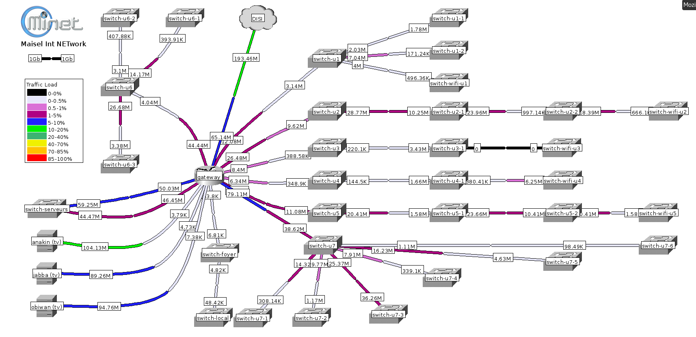
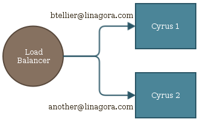
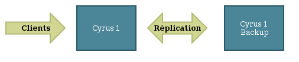
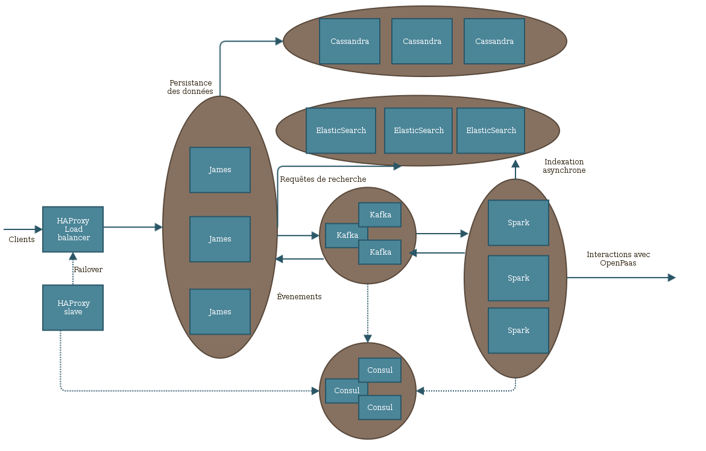

Open-up
System administration

Speaker : Benoit Tellier
Retrieve this presentation online : https://rawgit.com/chibenwa/openup02_01/master/presentation/index.html
And on GitHub
Why this presentation ?
- Who am I ?
- Who you are !
- This semester
Who am I ?
Me
Age : 24
From : Paris, France
Job : Distributed application programmer
Spoken languages : French, English, (~German), soon vietnamese
In Vietnam since february 2016
- Hobbies :
- Climbing
- Play board games
- Coding
System administrator at MiNET
ISP for ~700 student
Relying on Free technology
Infrastructure and system administration
MiNET's network
What I did at MiNET
- Administrative work
- Storage for virtual machine disks with ZFS
- OpenStack infrastructure deployment
- Monitoring improvement with Zabbix
- Design hosting system for users website
- Supervise FireWall upgrade
- Etc...
Linagora employee
Until 2018
James developer
OpenUp speaker
Open source community in Hanoï
Cyrus' problem
A hard to understand code

Sharding, passive replication
Maildir
James
Free Mail server from the Apache Foundation

Mail server chosen for OpenPaas
Committer for ~ 1 year
JAMES internals

James distributed architecture
James Buzz Worlds
- Agile, SCRUM, CI (git, github, jenkins, docker)
- Java 8
- Cassandra, ElasticSearch, Kafka
About you !
Professional project
- Who wants to be a developer ?
- Who wants to be a DevOps ?
- Who wants to be a SysAdmin ?
- Who have other projects ?
About you (again)
- Who use LiNUX ?
- Who often use the command line ?
- Who already deployed stuff on a server ?
- Who already deployed OpenSource software on a server ?
- Was it a "public" server ?
- Who created and administrated his own website ?
- Who already handled infrastructure projects ?
- Who already used a Cloud ? Which one ?
About you (again)
- Do you have a Github account ?
- Who already contributed to OpenSource projects ?
- Do you write tests ?
- Do you use ever used a CI tool ?
- Do you ever practiced agile development ?
Expectations...
The upcoming semester
- Be autonomous with the command line
- Know basic linux programs
- Configure a LiNUX computer
- Write bash scripts
Why command line matters ?
- Combining simple commands is powerfull !
- Screens are expensive...
- Scripting and easy automation
Time management
- Lecture: 13 hours
- Mini-project: 40 hours
- Practice: 26 hours
- Exams : 6 hours
- Installing Linux
- Installing Linux + packet management
- UNIX commands
- UNIX commands bis
- Bash scripts
- User, groups, rights and ACL
- File system
- Mid term exam
- Job scheduling
- BTRFs
- Network configuration
- GPG and key signing party
- Your own cryptographic software!
- Git
Evaluating your work
- Class attendance 25%
- Mid-term exam 25%
- Final exam 50%